Dagor Max Tools
3ds Max includes several Dagor tools that are particularly useful for our workflow.
Dagor Scene Export: A tool for exporting assets, animations, and more.
Dagor Utility: A tool for procedural model adjustments.
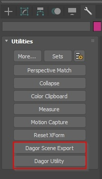
Connecting the Tools
The tools are located here: .../tools/dagor_cdk/windows-x86_64/plugins-3dsMax.
The process of connecting them is similar to other third-party plugins in 3ds Max:
Go to Customize ▸ Configure User and System Paths.
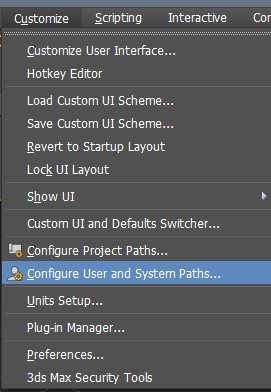
Select the 3rd Party Plugins tab and use the Add button to add the path to the tools.
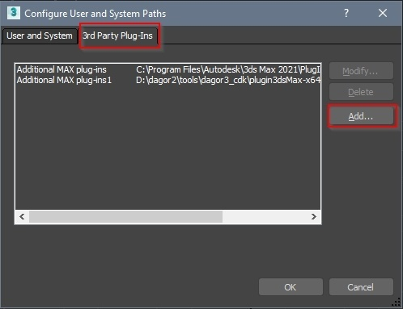
Let’s take a closer look at these tools.
Dagor Scene Export
The Dagor Scene Export tool is used for exporting assets, particularly for
saving scenes into .dag files. This is the primary function of interest.
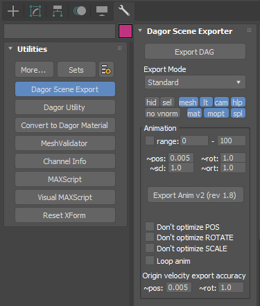
Dagor Scene Exporter
The buttons in the Dagor Scene Exporter interface have the following functions:
Export DAG: This button is used to export the scene into a
.dagfile.Export Parameter Buttons:
hid: Exports hidden objects in the scene (if the
selbutton is not enabled).sel: Exports only the selected assets in the Viewport.
mesh: Exports the geometry.
lt: Exports the light sources.
cam: Exports the cameras.
hlp: Exports the helpers.
no vnorm: Resets vertex normals during export. This does not alter the model itself, but resets the normals upon export. It’s recommended to adjust the normals directly on the model to avoid issues in the future. For more details, see here.
mat: Exports the materials.
mopt: Optimizes materials during export (removes materials not assigned to any geometry).
spl: Exports the splines.
Note
These parameters now come with tooltips that provide additional explanations.
In typical asset workflows, the following buttons are most frequently used:
sel: Use with caution, as it determines exactly what will be exported.
mesh: Always used when exporting geometry.
mat: Always used when exporting geometry with materials.
mopt: Always used to optimize materials.
Export Mode
The Export Mode section is extensive and merits a detailed explanation. The descriptions above apply to the standard export mode, but alternative modes are available for batch exports. Modes other than Standard are designed for exporting multiple files at once. Instead of specifying a file path, you indicate a directory path, and filenames are derived from the scene.
Objects as dags: As the name suggests, this mode exports each object as a separate
.dagfile. The filename is taken from the object’s name, and the pivot is local – taken from the object, not from the scene center. This means that even if the object is offset or scaled in the scene, it will be exported in its original state, as ifrotation=location=[0,0,0]andscale=[1,1,1].To export multiple objects into a single
.dagfile in this mode, group the objects. The group will be treated as a single object.Important
When creating a group, its pivot position is automatically set by Max to the center of the group’s bounding box. This can result in the pivot being offset, even if all components had their pivots aligned as intended. To avoid this, you must manually adjust the pivot position between grouping and exporting:
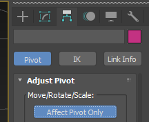
Export parameters in this mode function exactly as they do in standard export – you can exclude hidden objects, export everything or only selected items, etc.
Layers as dags: This mode saves layers as separate
.dagfiles. Thehidandselparameters behave slightly differently here since they apply to layers rather than individual objects.Export Rules:
Only layers at the bottom of the hierarchy (those without nested layers) will be exported. If a layer contains no objects that match the export parameters, an empty
.dagfile will not be created.The
defaultlayer is never exported, as it’s unlikely you’d need adefault.dag. However, nested layers withindefaultare checked and will be exported if they meet the specified criteria.If
sel=True, only the current layer (indicated by a different icon color in the Scene Explorer) and its nested layers will be checked. Ifsel=False, all layers in the scene will be checked.If
hid=True, hidden objects and layers will be exported. Ifhid=False, hidden layers will not be exported, and hidden objects will be excluded.
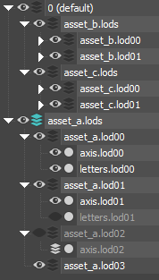
For example, in the image above, the current layer is asset_a.lods. If
sel=True, only this layer and its child layers will be checked, while
asset_b.lods and asset_c.lods will be ignored along with their contents.
The current layer contains child layers, so it will not be exported.
The child layer
asset_a.lod00has no further nested layers, but it has two visible nodes. It will be exported asasset_a.lod00.dagregardless of thehidsetting.The
asset_a.lod01layer has no nested layers, but one node is hidden. Ifhid=True,asset_a.lod01.dagwill be exported with both nodes inside; ifhid=False, only theaxis.lod01node will be exported.The
asset_a.lod02layer will be exported asasset_a.lod02.dagonly ifhid=True, as it is hidden.The
asset_a.lod03layer will never be exported, as it contains no nodes, making visibility irrelevant.
This method is particularly useful when working with a pack of assets rather
than a single one. For example, by grouping the layers asset_[a,b,c].lods into
a general layer called assets and making it active (or simply activating the
default layer as shown above, or setting sel=False), you can re-export the
entire pack with all LODs in a single click.
No VNorm and Optimization
When exporting objects, if custom normals are not assigned, the object will be exported without them, even if the no vnorm option is not enabled.
However, unlike .max files, .dag files cannot store custom normals for only
a portion of an object’s vertices while calculating the rest based on smoothing
groups. If even one vertex in an object has a custom normal, the .dag file
will store values for all vertices.
Example 1
In this example, we have a character model and a beveled cube with weighted normals, with the cube being a separate object.
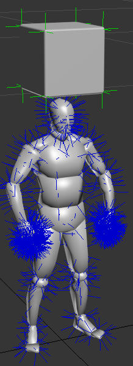
Upon export, custom normals were preserved only for the cube, since the character model had no custom normals assigned.
After re-importing, we can see that the character model lacks custom normals (normals are shown in blue in the Edit Normals modifier).
The
.dagfile size is 75 KB.
Example 2
Here, the character model and cube were attached together into a single object before export.
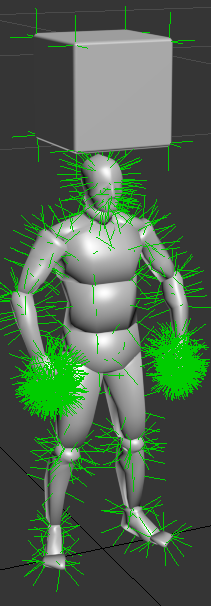
During export, custom normals were saved for every vertex, not just those belonging to the cube.
After re-importing, all the vectors on the character model appear “greened out,” even though they originally looked like the previous image before export.
The
.dagfile size is 166 KB.
Therefore, if you need to adjust shading using custom normals, it’s advisable to
detach the editable part of the model before applying custom normals. This
way, the .dag file won’t significantly increase in size after export. Be sure
to check after export by re-importing to see if any unnecessary normals
appeared.
Once custom normals are assigned, even resetting them through the Edit Normals
modifier or attaching the object to a new one won’t completely remove them. The
only reliable workaround is to export the objects to a .dag file with no
vnorm, delete the original, and then re-import the cleaned file. This ensures
all references to custom normals are removed, and export behavior will return to
normal.
After such a re-import, apply Dagor Utilities ▸ Materials ▸ Collapse Materials to prevent materials from being split into two copies with the same names.
Export Log
The Export Log records the results of each export operation.
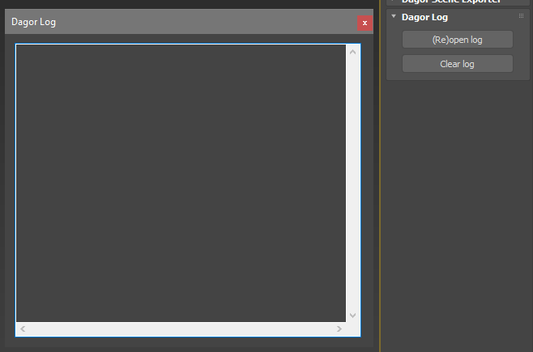
If you encounter any export errors, do not ignore them. Check the log to identify which objects in the scene are causing problems. Common errors include:
Presence of degenerate triangles.
Presence of unsmoothed triangles.
Geometry that is too large.
Non-Dagor materials assigned.
The log is now displayed in a separate, resizable window and will automatically open during export only if errors are detected. If there are no warnings, the export information is recorded, but the log window won’t pop up. So, if the log opens after export, carefully read it and address any issues. To view information about the most recent export, you can manually open the log by clicking the (Re)open Log button. If the log window was already open, clicking the button will reset its size and position to default, which is useful if the log was accidentally resized beyond the screen or moved off-screen.
Dagor Utility
The Dagor Utility tool is designed for the automatic correction and refinement of models. Below are the primary functions you’ll likely use:
Important
All these functions only work in Editable Mesh mode.
Remove degenerates: This function removes degenerate triangles, which are triangles with edges that lie on the same plane. If you encounter an error during export indicating the presence of degenerate triangles, use this tool.
Caution
Sometimes, this function can disrupt the shading of the model. If that happens, converting everything back to Editable Poly should resolve the issue.
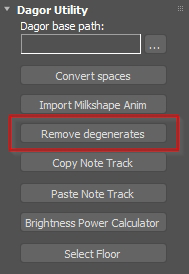
Dagor -> Dagor New: Converts the material assigned to a model from DagorMat1 to DagorMat2.
Collapse materials: Merges materials with the same name and identical parameters into a single material. This is useful when importing multiple LODs of the same object into 3ds Max. By default, these LODs have duplicated materials, so modifying the material on one LOD won’t affect the others. This function combines the duplicated materials into one. It’s crucial to use this function before making any modifications to the imported materials.
Show maps on s.o. (selected objects): Forces textures to display on objects with Dagor materials. There may be instances where textures don’t display correctly due to glitches – this button helps resolve that.
Hide: Forces textures to hide.
StdMat -> DagorMat: Converts a standard 3ds Max material to a DagorMat. The conversion is not perfect – it only transfers the diffuse texture. However, it can still be useful in some situations.
DagorMat -> StdMat: The reverse procedure, converting DagorMat back to a standard material. This process is also imperfect, but it might come in handy.
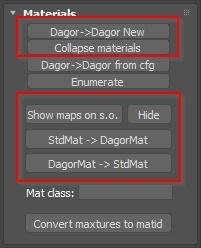
UV Utils: Provides tools for modifying UV mapping:
Copy: Copies UV mapping to another channel.
Swap: Swaps UV mapping between channels.
Move: Transfers UV mapping to another channel.
Kill: Deletes UV mapping on a specific channel (i.e., specifying the same channel in both channels).
CopyBuffer / PasteBuffer: These theoretically allow copying UV mapping from one model to another. This functionality has not been thoroughly tested.
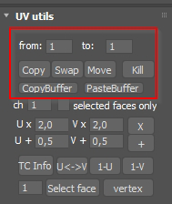
For additional optional tools that are installed separately, refer to the Dagor 2 Max Tools documentation.